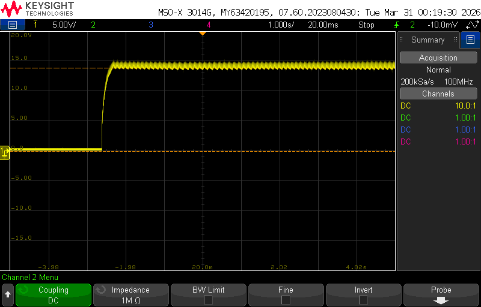

A boost converter and an equalizer, measured against their simulations
Two breadboard circuits, each designed on paper, simulated in LTspice, built, and measured on the bench. The part worth showing is not that they worked. It is what the bench disagreed with, and why.
Drag the duty cycle
A boost converter steps a voltage up with an inductor and a switch. While the switch is closed the inductor charges from the 5 V input; when it opens, the inductor's current has nowhere to go except through the diode into the output capacitor, and it adds its own voltage on top of the input. The fraction of each cycle the switch spends closed is the duty cycle D, and in the ideal case Vout = Vin / (1 − D). That formula is how the design was sized: a 15 V target from 5 V needs D = 66.7%.
Top: the 555 output driving the NMOS gate. Middle: inductor current. Bottom: output voltage, last six switching periods. The right hand plot is the same output over a longer window.
Three things to try. Push the duty cycle toward 90% and watch the output run past the 30 V design ceiling, then turn the limiter on: a PMOS watches the output through a divider and, when the ceiling is reached, pulls the 555's reset pin low and stops the switching until the output falls back. Set the load to open circuit with the limiter off and watch what a boost converter does with nowhere to send its energy, which is the failure the limiter was sized to prevent. Then add series resistance and watch the simulated output drop below the ideal curve, which is the story of the next section.
Where the 9.5% went
The bench read below the simulation in every case, and the gap grew with output voltage. The report accounts for it rather than reporting it: breadboard and supply wire resistance, resistor, capacitor and inductor tolerance, and the on resistance of the diode and the MOSFET. Every one of those losses scales with current, and current scales with output voltage, so the error should grow with the output. It did.
| Control method | Expected | LTspice | Measured | Error |
|---|---|---|---|---|
| PMOS ceiling at 15 V | 15.0 V | 15.0 V | 13.57 V | 9.5% |
| Duty cycle, 11 V target | 11.0 V | 11.0 V | 10.75 V | 2.3% |
| Duty cycle, 5 V target | 5.0 V | 5.0 V | 4.83 V | 3.4% |
Ideal curve, and the same converter with series resistance in the inductor path. Dots are the bench measurements from the report.
With a series resistance r in the current path and a load R, the output becomes Vin / (1 − D) · 1 / (1 + r / ((1 − D)2 R)). The correction term grows as D approaches one, because the inductor current, and so the loss, grows as 1/(1 − D). That is the shape of the measured gap. The exact resistance of that breadboard was never measured, so the slider is a model and the dots are the data.

The 555 sets the duty cycle
There is no microcontroller here. A 555 timer in astable mode charges a capacitor through two resistors and discharges it through one, so the high time is longer than the low time and the duty cycle is D = (Ra + Rb) / (Ra + 2Rb), always above 50%. That is a convenient accident for a boost converter, whose useful range is exactly there. One potentiometer in the timing network is the whole open loop control.
Hear the equalizer
The second project splits an audio signal into three bands, gives each its own volume, and recombines them into a speaker amplifier. The bands are passive RC filters: a low pass at 320 Hz, a high pass at 3.2 kHz, and a mid band made by cascading a high pass and a low pass. Move the faders and listen. The curve is the response of the actual filter values; the audio runs through the same filters.
Press play to start audio. Sources are synthesized in the browser.
The analog lesson in this circuit is loading. A passive RC filter only has the response you designed if nothing draws current from its output. Feed it straight into the next stage's input resistor and the corner frequency moves and the level drops, because that resistor is now part of the filter. The fix is a unity gain buffer between the filter and the volume stage, which is why the schematic has LM324 op-amps doing nothing but copying a voltage. Toggle the buffers off in the plot to see what the bands would look like without them.
The two designs


Neither is a finished product. The converter is open loop with a hardware clamp, not a regulator; there is no compensation, no current mode control, and no efficiency measurement. The equalizer has no distortion measurement. What both have is a design derived from the equations, a simulation, a build, and a measurement reconciled against the simulation from first principles.